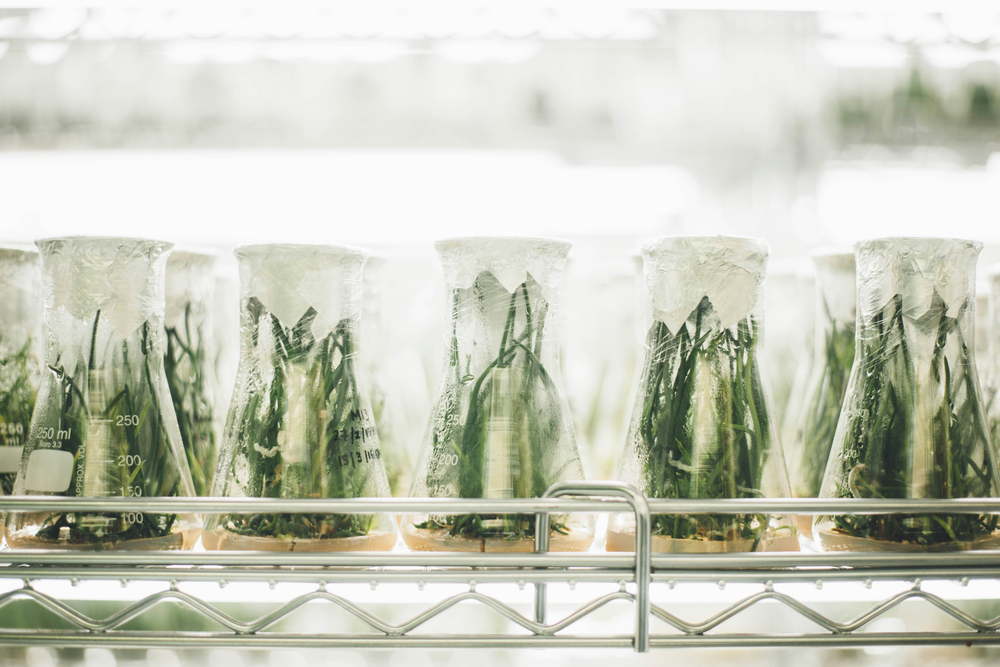
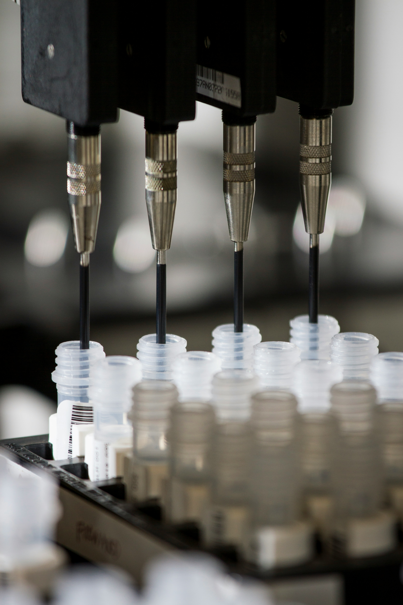

정밀 영상 판독
CT·MRI·병리 영상에서 미세 병변을 조기에 탐지하는 딥러닝 판독 엔진입니다.
질병은 더 빨리 발견하고, 치료는 더 정확하게 설계합니다.
바이오센스는 정밀진단 AI로 의료의 다음 기준을 만듭니다.
About BIOSENSE
바이오센스는 영상 판독, 유전체 데이터, 생체 신호를 하나의 AI 파이프라인으로 연결합니다. 흩어져 있던 임상 정보를 통합해 의료진이 더 빠르고 정확하게 판단할 수 있도록 돕습니다.
2016년 설립 이후, 국내 의료기관 32곳과 함께 정밀진단 알고리즘을 검증하고 고도화해왔습니다. 우리는 기술이 아니라 결과로 신뢰를 증명합니다.
Solutions
CT·MRI·병리 영상에서 미세 병변을 조기에 탐지하는 딥러닝 판독 엔진입니다.
유전 변이와 임상 데이터를 결합해 개인별 발병 위험도를 산출합니다.

웨어러블 기기로 수집한 생체 데이터를 실시간 분석해 이상 징후를 감지합니다.

축적된 진단 데이터를 근거로 의료진의 치료 계획 수립을 지원합니다.
Our Impact
바이오센스는 반복된 임상 검증을 통해 기술의 신뢰도를 증명합니다.
임상 검증 기관
32+
등록 특허·인증
41
AI 판독 정확도
98%
누적 분석 건수
1.2M+
Platform
임상 현장과 가장
가까운 곳에서 판단합니다
임상팀과 함께 귀 기관에 맞는 도입 로드맵을 설계해드립니다.